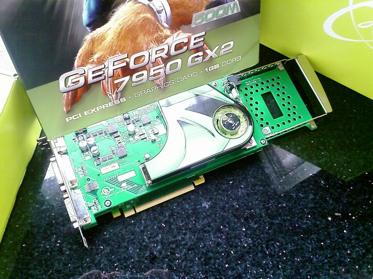

[ DUAL-GPU GRAPHICS CARDS // IDENTIFIED COMPONENT ]
NVIDIA GeForce 7950 GX2 1 GB dual-GPU
Dual-G71 single-card SLI board, 2006. This entry describes one identifiable model or reference configuration; related products and OEM variants are distinguished below.

MODEL / VARIANT: Each GPU has separate 512 MB; rendering and driver determine use. Not a pair of discrete cards. Motherboard BIOS/slot space and SLI driver support matter.
Recorded specifications
| Cataloged product | NVIDIA GeForce 7950 GX2 1 GB dual-GPU |
|---|---|
| Generation / core | Dual-G71 single-card SLI board, 2006 |
| Core & memory | Two G71 GPUs, each with 24 pixel pipelines and 512 MB GDDR3 on its own 256-bit bus; 1 GB aggregate (not shared); 500 MHz core and 600 MHz memory reference clock. |
| Host interface & I/O | PCI Express x16 card with two linked PCBs; dual DVI-I and HDTV output; one 6-pin PCIe input on reference board. |
| Variant boundary | Each GPU has separate 512 MB; rendering and driver determine use. Not a pair of discrete cards. Motherboard BIOS/slot space and SLI driver support matter. |
| Archival identification | Record complete part number, PCB revision, BIOS/firmware, device/subsystem IDs, driver version, adapters, condition, and source-document edition. |
Compatibility, service & archival notes
NVIDIA advertised a single board with two GPUs; 1 GB total is not a single pooled memory space.
Inspect PCB interconnects, frame, power socket, and fans. Preserve VBIOS and driver pairing; confirm both GPUs enumerate and board fits slot spacing.
- Check signaling, slot keying, lane width, power pinout, board length, case clearance, airflow, and PSU requirements for the exact item.
- Use drivers for the device ID and target OS; preserve installer/firmware copies and record their source before updates.
- Do not power hardware with corrosion, cracks, damaged connectors, obstructed cooling, or suspected shorts; document condition before bench testing.
Manufacturer, model & standards sources
- NVIDIA GeForce 7950 GX2 product materialModel-specific product or interface reference; compare with the physical label and exact board revision.
- GeForce 7950 GX2 model specificationsModel-specific product or interface reference; compare with the physical label and exact board revision.
- PCI Express specificationsModel-specific product or interface reference; compare with the physical label and exact board revision.
- Hardware Review — NVIDIA GeForce 7950 GX2 BenchmarkIndependent video review; treat as supplementary context, not primary manufacturer documentation.
Reference specifications do not supersede the board vendor manual and nameplate. Performance figures are vendor claims unless identified as measured results.